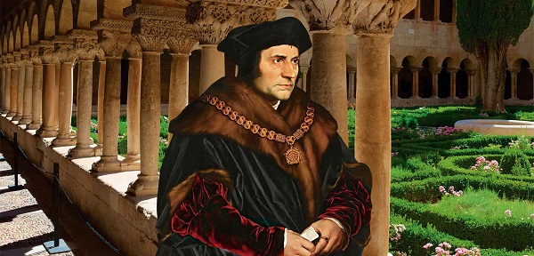
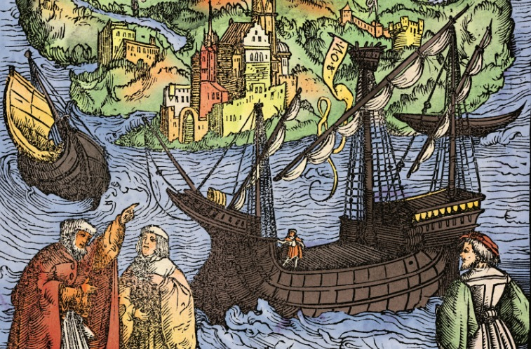

TOMÁS MORO, UTOPÍA
LA ISLA GRANDE DE TIERRA DEL FUEGO
0. INTRODUCCIÓN
Todo el mundo tiene referencias y habla de este librito, pero son poquísimos los que lo han leído.
Vino a mis manos una edición española del año 1638, y su lectura me impresionó profundamente, y estoy
seguro de que su difusión ha de hacer un gran bien entre todos los que andamos en "cosas" sociales.
Tomás Moro publicó su "UTOPIA" en 1516, y Lutero dio el primer paso hacia la
Reforma Protestante en 31 de octubre de 1517, al publicar sus 95 tesis en Wittemberg. Después, la
Historia ha seguido su curso.De estos hechos han pasado cuatro Siglos y medio, y hoy tenemos suficiente perspectiva
para darnos cuenta de muchas cosas que nuestros antepasados no pudieron ver.
¿Y el pueblo? ¿Qué papel desempeñaba en todo esto el pueblo? Lo que hoy llamamos
"pueblo" entonces se denominaba "los súbditos", "los vasallos", "los sujetos"..., nombres todos
que indican netamente que la gente sin privilegios (el vulgo) eran y seguimos siendo, ante todo,
los sometidos y los servidores de los poderosos.
La gente del pueblo no tenía "patria" (pasarían dos siglos antes de que se inventara), pero
tenían Rey, al que tenían que servir lealmente. Y esta era regla. A esto ahora lo denominaríamos
"discriminación señorial": los "señores" por una parte y los "siervos" por otra.
Lo más opuesto a "UTOPIA" es Jauja.
No dudo que habrá lectores que recorrerán las paginas que siguen como si leyeran una
historieta absurda de ciencia ficción", que tanto gustan actualmente, o como una divertída
exposición del país de Jauja. Y no es esto. Ni mucho menos. En mi opinión es todo lo contrario. Es
un libro para meditarlo.
Comprendo muy bien que después de aquella situación de prepotencia universal (que
culminó en los años de la aparición de "UTOPIA").
Ello es muy natural, aun que no tiene nada de sobrenatural. El
resultado ha sido que en vez de ser "luz del mundo" y "sal de la tierra", hayamos sido en no pocos
aspectos una rémora a la marcha providencial de la Historia.
Espero y deseo que esta edición pueda ser útil a muchos.
El dormir durante unas horas es
muy sano; pero dormir durante siglos y siglos... ¿puede defenderse como cosa
buena?
Enero de 1964
ROVIROSA
1. DESCRIPCIÓN DE LA ISLA Y SU AGRICULTURA
La isla de UTOPIA se extiende unos doscientos kilómetros, y por larguísimo espacio no se
estrecha considerablemente, pero en sus extremos queda reducida a unos cincuenta kilómetros.
Dichos extremos están como torcidos, de manera que toda la isla tiene una forma parecida a la de
la luna nueva. Estas partes extremas, azotadas por el mar, distan una de otra unos once kilómetros.
Dentro de dicho lago existe un puerto de mucho tránsito, con un desembarcadero natural
muy bien acomodado.
Se cree (y el aspecto del lugar lo confirma) que aquel país antes no estaba totalmente
rodeado por el mar. Pero Utopo, de quien tomó nombre la isla, por haberla conquistado, ya que
antes se llamaba Abraxa, fue quien hizo que sus moradores, que eran rústicos y muy atrasados,
vivieran de manera humana y civil. Fue él quien mandó formar un istmo de unos diez kilómetros,
con lo que UTOPIA quedó separada de la tierra firme y convertida en una isla.
Hay en la, isla cincuenta y cuatro ciudades, todas las cuales tienen en común el idioma, las
instituciones y las leyes; y puede decirse que todas ellas están construidas bajo un mismo modelo,
en cuanto lo permite el terreno. La distancia media entre ellas es, de unos veinte kilómetros, y
ninguna está tan apartada de la más próxima, que en una jornada un peatón no pueda desplazarse
de una a otra.
Tres ciudadanos expertos y venerables de cada una de dichas ciudades acuden todos los años
a Amauroto, ciudad que por estar en la parte central de la isla es fácilmente accesible a todas las
demás y se considera, como la Capital, por ser donde se tratan las cosas comunes y la ordenación
pública de todo el país.
Existen alquerías muy bien provistas de toda clase de utensilios para las labores agrícolas, y
para el trabajo en estos cortijos se turnan los ciudadanos. Ninguna familia de una alquería agrupa
menos de cuarenta personas, en las que se señala Padre y Madre de familias por edad y por
costumbres venerables. Cada treinta alquerías forman una agrupación y se designa a una que se
considera como cabeza y representante de todas las demás.
Así todos los habitantes de la isla son expertos en los trabajos del campo, y se puede
echar mano de todos ellos para las tareas de la recolección.
Y aunque esta manera de renovar el personal agrícola se ordena a que nadie lleve esta vida
dura por más tiempo de dos años.
Los labradores cultivan el terreno, cuidan el ganado y demás animales, cortan leña y la
conducen a la ciudad por tierra o por mar, según más convenga. Las labores de cultivo y
acarreo las realizan con bueyes, que son menos sujetos a enfermedades.
Beben vino de uvas y sidra, o agua pura, o cocida con regaliz, de
la que disponen en gran abundancia. Y aunque producen todas cuantas vituallas se consumen en la
Ciudad y en sus contornos, siembran bastante más para poder socorrer a otros países vecinos.
Todos los instrumentos de labranza se los proporcionan en la Ciudad por conducto del
Magistrado, sin abonar nada por ellos. Muchos campesinos concurren todos los meses a las fiestas
solemnes. Cuando llega el tiempo de la siega, los jefes de la labranza indican al Magistrado el
número de los que han de enviar a segar, y acudiendo todos a una en tiempo sereno, casi en un día
siegan todos los campos.
2. LAS CIUDADES: ESPECIALMENTE AMAUROTO
Voy a fijarme en la ciudad de Amauroto, por ser la principal y estar en ella el Senado; por ser la más
ennoblecida y por ser la que mejor conozco, por haber residido en ella cinco años.
Está situada en la falda de un monte, siendo su forma cuadrada, extendiéndose suavemente
desde lo alto de un collado en una extensión de un kilómetro hasta llegar al río Anidro,
prolongándose un poco más al otro lado del mismo.
Este río nace unos cíen kilómetros más arriba de Amauroto, de una pequeña fuente, pero con
el concurso de otros ríos que confluyen en él, especialmente de dos mediados, aumentan mucho
sus aguas, de manera que al llegar a la Ciudad su lecho tiene una anchura de unos trescientos metros.
Luego se va ensanchando más, hasta llegar al Océano. En todo el trayecto que va del mar a
la ciudad, y hasta un poco más arriba, con la subida y bajada de la marea, el río modifica su
corriente cada seis horas. Cuando sube la marea las aguas del mar penetran río arriba y las aguas
quedan salobres, pero después queda el agua limpia y normal.
La ciudad se comunica con la ribera opuesta, no con barcazas o pasarelas de madera, sino
con un magnífico puente con arcos de sillería, construido en la parte más apartada del mar, para
que las naves puedan llegar sin dificultad a la zona central de la Ciudad.
Las plazas, están abrigadas con pórticos, tanto para el buen servicio de los almacenes como
para la comodidad de los habitantes. Los edificios son semejantes y muy bien cuidados, sobre todo
en las fachadas. Las calles tienen veinte metros de ancho, y todas las casas están rodeadas de jardín.
Las casas tienen una puerta principal y una puerta falsa, con cerraduras muy sencillas, que
todos pueden abrir fácilmente, de manera que cualquiera puede entrar y salir por ellas, ya que
nadie posee nada en particular.
Cada diez años todos cambian de domicilio por sorteo, y todos sienten emulación por dejar
la casa lo más arreglada posible. Un cuidado especial ponen todos en sus jardines, en los que
plantan cepas, árboles frutales, hortalizas y flores, con tanta hermosura y buena labor que jamás he
visto cosa igual.
Así se refiere en los Anales que tienen escritos y guardados, en los que se
contiene la historia de la isla desde que fue descubierta, abarcando un período de mil setecientos
sesenta años. Por ello, se comprueba que al principio las cosas fueron parecidas a lo que ahora son
pajares, una especie de cabañas y chozas, construidas con toda clase de maderas sin distinción, con
muros de tapia y cubiertas de pajizo y retamas.
En la actualidad cada casa tiene tres pisos, siendo el exterior de los muros de piedra labrada
9 de ladrillo, y lo interior revocado con argamasa; las azoteas llanas y descubiertas se protegen con
cierto betún que fabrican con productos molidos, de muy poco coste, pero es tan eficaz que el
fuego no lo altera y que defiende del mal tiempo mejor que si fuera con placas de plomo.
Contra los vientos usan vidrieras en las ventanas porque en aquella tierra hay mucho vidrio,
aunque a veces también se sirven de telas enceradas con aceite o goma, con lo que se resguardan
de los vientos y reciben más luz.
3. LOS MAGISTRADOS
Todos los años cada grupo de treinta familias eligen un Magistrado, que en su idioma
antiguo llamaban Sifogranto, y en el moderno Filarco. Cada diez de estos Sifograntos, de acuerdo
con las familias, eligen otro Magistrado superior, que antes llamaron Traniboro, y actualmente
denominan Protofilarco. Cada cuarta parte de la Ciudad elige un Senador.
Los Traniboros se eligen por un año, y no los deponen sin causa justificada. Todos los demás
Ministros y Oficiales también los eligen por un año.
En dichas reuniones tratan los almacenes de la República, procurando
resolver las disensiones entre particulares, si las hay, que siempre son pocas.
Cada reunión del Senado viene presidida por dos Sifograntos, que se turnan por orden; no
consintiéndose que se acuerde ningún asunto de importancia para la República, sin haberse
planteado tres días antes de tomarse la resolución.
Se considera como un, delito capital el tratar ningún negocio público fuera del Senado y de
sus Juntas señaladas. Por esta razón, todo lo que se
considera de importancia se comunica a la Junta de los Sifograntos, y éstos dan parte a las familias
que los eligieron, consultándose entre ellos, de todo lo cual dan noticia al Senado. A veces se
tratan los almacenes en las Juntas Generales de toda la Isla.
Es norma del Senado el que ningún asunto se resuelva el mismo día que se propone, sino que
se difiera para la reunión siguiente, para que nadie, sin madurarlo, exponga lo primero que se le
ocurre, y después quiera sostenerlo tercamente, mirando más a su amor propio que al bien público,
ya que son algunos los que llevados por una necia vergüenza, para que no parezca que obraron a la
ligera, prefieren que prevalezca su opinión antes que la salud del pueblo, en aquello que debían
tener bien estudiado para poder hablar con más conocimiento y menos prisa.
4. EL TRABAJO
La Agricultura es la ocupación universal de hembras y varones, todos los cuales la conocen y la ejercitan sin distinción.
Esto se les inculca desde su más tierna edad; teóricamente, en la Escuela, y prácticamente en
unos campos que están junto a la Ciudad, y no sólo mirando, sino empleando los niños en ello sus fuerzas corporales.
Además de la Agricultura, cada uno se ejercita en otro oficio distinto, como trabajar la lana o
el lino, la cantería, la herrería, la carpintería y demás artes manuales.
Las mujeres se ocupan en trabajos menos pesados tales como el labrar la lana y el lino. Y los
hombres en los más duros. En general, y el hijo sigue la profesión del padre, ya que casi siempre la
naturaleza le inclina a ello; pero si alguno tiene inclinación decidida por otra profesión, pasa por
adopción a otra familia que trabaje en aquella tarea a que se siente inclinado. En estos casos
interviene no solamente el padre natural, sino también el Magistrado, cuidando de que el padre
adoptivo sea hombre honrado y serio.
Si alguno se ha instruido bien en una Profesión y desea aprender otra, se le permite, y cuando
las conoce bien se aplica a aquella que es más de su gusto. Está al cuidado de los Magistrados
el evitar que haya vagabundos, antes bien, cada uno esté bien ocupado en su profesión.
No comienzan su labor muy de mañana, ni trabajan continuamente, ni durante la noche, ni se
fatigan con perpetua molestia, porque es una infelicidad mayor que la de los
esclavos de la Vida de los trabajadores que han de estar a su tarea sin descanso, como ocurre en todas
partes, menos en Utopía.
Dividen el día y la noche en veinticuatro horas, dedicando seis horas diarias al trabajo, tres
por la mañana, al final de las cuales van a comer. Tienen una siesta de dos horas después de la
comida, y una vez descansados vuelven al trabajo por otras tres horas, que se terminan con la cena.
Las veinticuatro horas empiezan a contarse a partir del mediodía. A las ocho se retiran a
dormir durante ocho horas. En los intervalos de comer, cenar y dormir, cada uno emplea su tiempo
con lo que mejor cuadra con su libre albedrío.
La mayor parte de estas horas libres las dedican a los estudios literarios, ya que es costumbre
que haya lecciones públicas antes del amanecer; a las que por obligación solamente asisten
aquellos que están encargados y escogidos para cuidar del estudio. Además de éstos concurren
voluntariamente gente de todo estado, tanto hombres como mujeres, a oír a los disertantes, cada
uno según sus aficiones y según su profesión.Después de la cena tienen una hora de recreo,
que en verano transcurren en los jardines, y en invierno en las grandes salas que
se emplean como comedores colectivos, donde se oye música o se hace tertulia.
5. DURACIÓN DEL TRABAJO
Conviene poner la atención en esto para no llamarse a engaño, pues podía imaginarse que
con solamente seis horas de trabajo diario no podrán producirse los bienes cuyo uso es
indispensable, lo cual está muy lejos de suceder, porque con este tiempo, no solamente basta sino
que sobra para obtener en abundancia las cosas necesarias para la vida y aun las superfluas.
En los países en que casi todas las mujeres (que son la mitad del pueblo) trabajan y los
hombres se dan al reposo, además del gran número de sacerdotes y religiosos que no producen
nada con sus manos, ni los señores ricos y herederos (a los que el vulgo llama nobles y caballeros),
incluyéndose en esta cuenta a toda la caterva de los que sirven a estos últimos de espadachines y
truhanes, hallaréis que son muchos, los que no producen nada.
Entre los que trabajan hay una gran parte que no se ocupan en cosas necesarias, ya que donde todo se
consigue con dinero es forzoso que haya muchas artes totalmente vanas, que sólo sirven al antojo y al exceso.
Si los pocos que trabajan se aplicaran todos en los menesteres necesarios a la vida humana,
sin duda que bajarían los precios de las cosas, de manera que la vida resultaría mucho más fácil. Y
si se juntaran a éstos todos los que viven en el ocio y en la holganza, y se ocuparan en trabajos
provechosos para todos (contando con que los artífices de las manufacturas de lujo y los
holgazanes consumen cada uno tanto como dos oficiales de trabajos útiles y necesarios) aquellas
seis horas diarias bastarían y sobrarían para estar abastecidos abundantemente de todas las cosas
necesarias para la vida y su comodidad" incluso para los, deleites verdaderos y naturales.
La experiencia nos da verdadero testimonio de ello en Utopía, donde en cada Ciudad y las
aldeas de sus contornos apenas si se permite holgar (entre hombres y mujeres) con a quinientas
personas fuerza y edad aptas para el trabajo. Entre éstos, los Sifograntes, que si bien las leyes les
declaran exentos, no se excusan de trabajar, para estimular con su ejemplo a los demás.
Del mismo privilegio gozan los estudiantes, a quienes por acuerdo de los Magistrados el pueblo les concede
por votos secretos, que solamente se ocupan en sus estudios; y si alguno no corresponde a las esperanzas que en
él se pusieron, se le saca de los estudio, y se le dedica a trabajos manuales.
Y por el contrario, sucede muchas veces que, un trabajador manual que aprovechó sus horas libres
para el estudio, le sacan de su trabajo para que se aplique solamente a estudiar.
Además de estas cosas que he referido, hay que añadir que en los trabajos usuales necesitan
menos esfuerzo que en otros países. Fijémonos, por ejemplo, en la obra de construcción o de
reparación de edificios. En otros países es necesario que haya muchos dedicados a la reparación,
porque lo que los padres construyen con gran trabajo, los herederos pródigos lo descuidan de
manera que poco a poco se arruinan, así que lo que pudo repararse a poca costa, el sucesor tiene
que edificarlo casi de nuevo.
En Utopía las cosas no ocurren así, porque estando todas las cosas y las Ciudades
compuestas y ordenadas de una vez, raramente acontece que se elija nuevo sitio para fundar
edificios, y no sólo acuden con brevedad a reparar lo que se deteriora, sino que lo previenen con
tiempo, antes de que amenace ruina. Por esto sucede que los edificios duran mucho tiempo, y que
los Maestros de Obras tengan poco en qué ocuparse, si no es en tener preparados maderos y
sillares para que cuando la necesidad lo pida, puedan acudir con mas diligencia a las reparaciones.
6. LOS HOSPITALES Y LOS ENFERMOS
En los Hospitales Públicos, se atiende al cuidado de los enfermos.
Hay cuatro Hospitales en cada Ciudad (uno por cada Distrito) y están situados en las afueras, siendo
tan capaces que parecen poblaciones pequeñas.
Ello permite que no estén amontonados en el caso de haber muchos enfermos, y si hubiere
enfermos contagiosos pueden perfectamente, separarse unos de otros.
Estos Hospitales están tan bien dispuestos y surtidos de todas aquellas cosas que afectan a la
salud, y servidos con tantas atenciones y cuidados por enfermeros y médicos doctores, que si bien no
es obligatorio que se lleven allí a todos los enfermos, no hay nadie que al sentirse malo no prefiera
pasar la enfermedad en el Hospital mejor que en su casa.
A los enfermos los asisten con grandes atenciones y cuidados, no dejando de emplear ningún
medicamento ni ningún régimen que sea útil para restituirle la salud que le falta. Si alguno padece
enfermedad crónica, le hacen compañía, entreteniéndole con la conversación y prodigándole toda
clase de cuidados para aliviarle. Cuando el despensero de los enfermos ha tomado lo que necesita
según las órdenes y recetas de los médicos, se mira lo mejor que hay y se reparte en partes iguales a todos.
Si la enfermedad es incurable, con, grandes y constantes dolores, el Magistrado le visita y
conforta, tratando de persuadirle de que hallándose inepto para los actos
de la vida, molesto a los demás y pesado a sí mismo, que no se rebele contra su pronto fin
queriendo alimentar la maligna enfermedad. Que siendo su vida un tormento, no dude en morir,
antes bien lo desee con la confianza de tan miserable estado, ya sea quitándose él mismo la vida o
pidiendo que se la quiten, ya que al morir no dejará comodidades, sino la peor miseria.
A nadie hacen morir contra su voluntad, ni les
disminuyen los cuidados durante la enfermedad mortal, persuadidos de que ejecutan una
ocupación muy virtuosa.
7. RELACIONES HUMANAS
Vamos a exponer ahora la manera con que los ciudadanos de Utopía comparten entre sí, y
cómo son sus relaciones. La Ciudad se compone de familias basadas en el parentesco.
Los hijos y los nietos viven en la familia bajo el respeto del más anciano,
y cuando la edad y los achaques lo exigen, le sucede el que le sigue en edad.
Una vez que se han juntado con los que aceptan este trato, fácilmente se conforman con las
costumbres que son de utilidad para ambos pueblos. De esta suerte, con sus buenas
ordenanzas hacen que se fertilice la tierra que antes era estéril.
Cuando algún pueblo prohibe a otro el uso y la posesión de terrenos que tiene vacíos y
desocupados, de los que nadie se aprovecha, por ley y ordenamiento del Derecho Natural este otro
pueblo puede vivir allí y trabajarlo, y apoderarse del dominio y del uso de aquella tierra.
Volviendo a la manera de vivir de los habitantes de Utopía, él más anciano preside la
familia, las mujeres sirven a los maridos, los hijos a sus padres, y en general los de menor edad a
los mayores.Cualquiera de las Ciudades se subdivide en cuatro Distritos iguales, cada uno de los cuales
tiene en su centro una plaza donde se hallan los almacenes generales comunes a todos. Hay lugares
determinados donde se llevan los productos del trabajo propios de cada familia. Cada especie de
alimentos se conservan en silos apropiados por cada clase.
De estos almacenes cada padre de familia saca todo aquello que necesita para sí y para los
suyos, sin dinero ni nada que lo sustituya. ¿Por qué se le negará nada si allí hay abundancia de
todo, y Sin temor a que nadie pida más de lo que necesita?
Es cosa manifiesta que cuando no hay temor de que falte lo que se necesita, cesa la ambición
de querer acumular aquella clase de bienes, y como esta ambición no se da en Utopía, viven
perfectamente tranquilos. Junto a las plazas centrales de las que se hecho mención, existen otras que llaman de
Suministros, en las cuales se almacenan las hortalizas y las frutas, además del pan.
Se prohibe que ninguna cosa inmunda, sucia o asquerosa entre
en la Ciudad, cuya putrefacción corrompa el aire y provoque enfermedades.
8. COMEDORES
En cada barrio hay un edificio público (separados los de unos y otros barrios por la misma
distancia) que sirve de morada al Magistrado (Sifogranto), que es el representante de 30 familias, de las que 15
están a un lado del edificio y las otras 15 al otro, y las 30 familias se reúnen en dicho gran local
para sus comidas. Los despenseros de estos comedores colectivos se reúnen en la Plaza a horas determinadas,
para pedir las provisiones, según el número de comensales que tienen asignados.
Asisten a estos Comedores los Sifograntes con las 30 familias que cada uno de ellos
representa, que se convocan al son de una trompeta cuando llega la hora de comer, con la
excepción de los que están enfermos en sus casas o en el Hospital. A nadie se le prohibe que se
lleve comida a su casa, pon estar persuadidos de que nadie es capaz de hacerlo sin necesidad.
Y aunque es lícito a todos el quedarse a comer en sus casas, nadie lo hace porque no les parece
decente, reputándose por cosa de poco juicio el tomar sobre sí un trabajo innecesario, pudiendo
comer espléndida y abundantemente con los demás, con las máximas facilidades.
El número de mesas es proporcionado al de los comensales. Los varones se sientan de
espaldas a la pared y las mujeres en los bancos de fuera, con objeto de que si les sobreviene algún
accidente (especialmente a las que están embarazadas) puedan acudir rápidamente a remediar la
necesidad. Las que amamantan a sus pequeños comen en una pieza algo apartada, con cunas para
los niños de pecho, donde siempre tienen provisión de lumbre y agua clara para poderlos limpiar y
recrear. Hasta que han cumplido los cinco años, los niños comen en la misma sala donde están las
madres lactantes. Los demás niños mayorcitos, así como los jóvenes y las mozas, todos los cuales,
hasta que se casan, sirven en las mesas.
La mesa principal está en la cabecera, desde la cual se divisa toda la concurrencia. En el
lugar preferente se sienta el Sifogranto con su esposa y a continuación los más ancianos,
sentándose por todas las mesas de cuatro en cuatro. Así se van acomodando los más jóvenes
junto a los mayores.En la comida y en la cena se lee alguna cosa moral, con brevedad, para que no sientan
fastidió. Después de la lectura los ancianos animan pláticas sabrosas y decentes, sin hacer largos
discursos, sino que procuran que hablen los jóvenes, contando que con la licencia de la comida se
manifiesta el natural y las habilidades de cada uno.
Las comidas son más breves que las cenas, porque éstas van seguidas de sueño y del
descanso, y así creen que se hace mejor la digestión. En la cena suena la música,
y como postre comen frutas.
Si alguno desea visitar a unos amigos que residen en otra Ciudad, o tiene simplemente el
deseo de ver otra Ciudad, con facilidad obtiene la autorización de los Sifograntos y Traníboros, a
no ser que hubiera alguna dificultad de carácter público.
No llevan provisiones de ninguna clase, ya que en todas partes las encuentran, como si
estuvieran en su casa. En cualquier lugar donde se detengan más de un día, trabajan en su
profesión y sus colegas les tratan humanísimamente, obsequiándoles de muchas maneras.
9. COMERCIO INTERIOR Y EXTERIOR
En el Senado de Ámauroto (al cual, como se ha dicho, acuden todos los años tres delegados
de cada Ciudad) cuando se sabe que de ciertos productos hay abundancia en ciertos lugares,
mientras que en otros las malas cosechas han motivado escasez, se ordena que la carencia de unos
se remedie con la abundancia de otros.
Esto se hace sin interés alguno, sin recibir nada en pago de aquellos a quienes se da. Incluso
ocurre que cuando una Ciudad que antes estuvo en la abundancia y pudo socorrer a otra, cuando se
encuentra en necesidad no pide nunca a las Ciudades que ella antes socorrió, para que no parezca
que quieren cobrar, sino que se dirigen a aquellas que no ayudaron nunca. Así, toda la Isla es como
una gran familia.
Después de que, con gran atención, se han provisto ampliamente de todo lo necesario (lo cual estiman que se ha logrado cuando tienen provisiones para dos años), lo que les sobra lo llevan a otros países, como trigo, miel, lana, lino, cochinilla, conservas de pescado, pieles curtidas, cera, sebo, ganado vivo, etc. A su regreso llevan a Utopía gran cantidad de oro y plata, con algunas mercancías que necesitan y que no se producen en la Isla, que son pocas, siendo la principal el hierro. Con estas exportaciones continuas, los metales preciosos abundan más de lo que se puede creer.
10. CUALIDADES Y CULTURA
Su complexión y disposición corporal es ágil y robusta, con fuerzas proporcionadas a su
estatura, que no es de pequeña talla.
Aunque el terreno es bastante bueno y el ambiente es muy sano, con la moderación de su
vivir se conservan sanos, y con su trabajo vencen la esterilidad de la tierra, de manera que en
ningún lugar habrá más copiosos frutos, ni animales domésticos mejor alimentados, ni los cuerpos
humanos más vivaces y activos, y menos sujetos a achaques.
Ello es de tal manera, que no solamente los cultivos habituales de los labradores se ven
cuidadosamente administrados, como es el mejorar las deficiencias del terreno con ciencia,
solicitud y cuidado, sino que además se ven grandes selvas arrancadas de una parte y trasplantadas
a otra, en lo que no solamente miran a la producción, sino también al acarreo, para que la madera
se halle más cerca del mar, o de los ríos, o de la misma ciudad; ya que el grano y los frutos se
transportan desde lejos por caminos con mayor comodidad que las maderas.
Son benignos y apacibles, amantes de la tranquilidad; son firmes en sus trabajos, de manera
particular en los estudios, con los que adornan su espíritu. Habiéndonos oído discutir de la
Filosofía y demás disciplinas de los griegos antiguos, es cosa notable el señalar con cuánta afición
nos instaron a que se lo expusiéramos para poderse enterar de ello.
Con este objeto empezamos por exponerles los principios fundamentales, para que no les
pareciese que rehuíamos el trabajo, esperando gran aprovechamiento del mismo. Tan pronto
como empezamos nos dimos cuenta de que no sería un trabajo en vano, ya que empezaron a
escribir en griego y a pronunciar las palabras con gran facilidad, recordando y repitiendo con tanta
prontitud y fidelidad que estábamos maravillados.

Los estudiantes se escogieron entre los que tenían un ingenio excelente y de sazonada edad,
de manera que en menos de tres años no ignoraron nada de lo que nosotros podíamos enseñarles.
Leían sin tropiezos los buenos autores si las erratas de la imprenta no se dificultaban. Me
imagino que la razón por la que captaron con más facilidad las letras griegas que las nuestras es
porque aquéllas son más parecidas a las suyas; yo supongo que este pueblo debe tener su origen en
los griegos; ya que en su lenguaje hay muchas palabras griegas, sobre todo en las que designan a
los Magistrados y a los nombres de las Ciudades, aunque en lo demás hay una grande influencia persa.
Pude procurarles la mayor parte de las obras de Platón y muchas de Aristóteles; también las
obras de Teofrasto sobre las plantas, aunque a este tratado le faltaban bastantes hojas, que bien lo
sentí. Ocurrió que en la nave embarqué unos fardos de libros, y un mono amaestrado que iba a
bordo cogió el libro de Teofrasto que yo había dejado descuidado, y empezó a jugar con él arrancándole hojas.
De los que escribieron Gramática sólo tienen a Constantino Lascan. No llevé conmigo
ningún Diccionario, excepto el de Hesichio y Dioscórides. Tuvieron en mucha estima las obras de
Plutarco, y celebraron en gran manera los donaires y gracias de Luciano. De los poetas estimaron
Aristófanes, Homero y Eurípides. De los historiadores eligieron a Tucídides, Herodoto y Erodiano.
En cuanto a Medicina, mi compañero Tricio Apinato llevaba consigo algunas obras de Hipócrates
y el Epílogo de Galeno; de ellas hicieron un gran aprecio. Aunque no hay gente en el mundo que
necesite menos que ellos del arte médico, lo tienen en verdadera veneración, ya que lo cuentan
entre las partes más hermosas y útiles de la Ciencia, ya que con su ayuda penetran las cosas más íntimas y secretas.
El talento de los de Utopía ejercitado en el estudio tiene gran facilidad para inventar
artificios útiles para la comodidad de la vida; pero dos de ellos los deben a nuestra presencia allí,
que fueron la imprenta y el papel.
Aunque a decir verdad se lo deben en gran parte a ellos mismos, ya que mostrándoles libros
impresos por mi compañero Aldo Manucio, al hablarles de ello, más que explicándoles la manera
de trabajar la pasta y formar el papel, así como el arte de imprimir (ya que entre nosotros no había
ninguno que conociera completamente estas técnicas), ellos mismos, con gran brevedad y
prontitud, lo conjeturaron todo, siendo así que antes solamente, escribían en un pergamino al que llamaban papiro.
A cualquiera que sea persona culta y que haya viajado, si llega a la Isla de Utopía para
conocer su modo de vida y sus instituciones, le acogen con benignidad, pues oyen con gusto lo que
pasa en naciones lejanas.
A este país van con poca frecuencia los comerciantes, ya que solamente les interesa (a los de
Utopía) el hierro y aquello que los comerciantes buscan con más empeño llevarse, que es el oro y
la plata. Aparte de que ellos estiman que es mejor que sean ellos mismos los que vayan a comprar
y a vender sus cosas al extranjero que esperar que otros vengan. Con lo cual adquieren mayor
conocimiento de otros países y se perfeccionan en el arte de la navegación.
11. LOS ESTUDIOS
Aunque no son muchos los que en cada ciudad se dedican únicamente al estudio libres de los
demás cuidados, con todo son muchísimos los que desde sus primeros años, por su buen natural,
agudeza de ingenio, y ánimo inclinado al estudio, se instruyen en las buenas letras. Y no solamente
los hombres, sino también las mujeres, durante el transcurso de su vida dedican al estudio gran
parte de las horas libres de sus labores profesionales.
Toda la enseñanza se da y se recibe en su propio idioma natural, que interpreta sus
sentimientos y estados de ánimo mejor que cualquier otro.
De todos los filósofos célebres en todo el orbe conocido por nosotros no tenían noticia, ni de
ninguno de ellos les había llegado la fama hasta ahora, al llegar nosotros a la Isla. A pesar de esto,
en la Música, en la Dialéctica, en la Aritmética y en la Geometría están prácticos, y con una
suficiencia análoga a la de nuestros mayores.
En el curso de las estrellas y movimientos de los astros son muy prácticos, y han construido
instrumentos de formas diversas con los que miden con exactitud los movimientos del Sol, de la
Luna, y de las Estrellas en el horizonte.
En cuanto a la Filosofía Moral tratan de los mismos temas que nosotros referentes al
hombre, pero su tema primero y principal consiste en examinar la felicidad del hombre, y si ésta
estriba en una sola cosa o en varias. Se inclinan más de lo justo en creer que la felicidad del vivir
consiste en el deleite.
Sus fundamentos son que el alma es inmortal, creada por la bondad para la
bienaventuranza; que existe energía para la virtud y buenas obras de los humanos.
Estiman que la felicidad no está en cualquier deleite, sino en los justos y honestos. Aseguran
que nuestra naturaleza se deja llevar a este mismo deleite como sumo bien, por medio de la virtud.
La virtud la definen diciendo que consiste en vivir según la Ley Natural.
Ahora bien, todos juzgan que debe alabarse, con nombre de "Humanidad",
el que los hombres se consuelen, socorran y remedien unos a otros. ¿Quién duda de que
la misma naturaleza inclina a los hombres a hacer con los demás igual que consigo mismo?
Llaman deleité al estado en que se hallan contentos con los gustos naturales, con firmeza del
cuerpo y del ánimo.
También tienen por personas que buscan falsos deleites a aquellas a que antes me referí, que
creen que ir mejor vestidos que los demás les hace mejores que ellos, y en una sola cosa cometen
dos yerros: el primero es que se engañan a sí mismos pensando que sus vestidos son mejores, ya
que ¿qué diferencia hay entre una lana tejida con fibras más finas y otra con hilos más recios? Pero
ellos, como si esto aumentara el valor de su persona, se envanecen con soberbia, y están seguros de
que ello les ha de granjear mayor estimación, pretendiendo exigir, como cosa justa, que se les
honre con acatamientos que no se atreverían a pretender si vistieran humildemente; y si no se hace
caso de ellos se indignan.
El segundo yerro que cometen es que se, jactan da cosas vanas y superfluas, con gran falta de
conocimiento. ¿Qué deleite natural y verdadero puede haber en que otra persona esté con la cabeza
descubierta en tu presencia, o con la rodilla hincada? ¿Acaso la incomodidad del otro remediará el
frenesí de tu cabeza, o curará la enfermedad de tus ojos?
También aquellos que guardan riquezas amontonadas, no para aprovecharse de ellas, sino
sólo por deleitarse con su contemplación. ¿No es éste un fingido y falso deleite?
Por todas estas consideraciones los de Utopía tienen completamente prohibida la caza.
Cuando se caza por la necesidad de la vida humana, el cazador debe de cazar el mas viejo
y el mas lento de la manada.
Hay otro deleite que no responde a ningún deseo de los sentidos, sino a una fuerza oculta que
produce delectación, y es la Música.
Prefieren, antes que otros, aquellos deleites del ánimo, por estimarlos los principales, ya que
se derivan de la virtud y de la buena conciencia, y hacen que la sanidad se tenga por el máximo
solaz, que aventaja a los mayores deleites.
El que es prudente trata de conservar la salud más que de apetecer la medicina, y
apartar los sufrimientos antes que buscar los deleites. Las medicinas y las distracciones sólo se
justifican para conseguir el alivio de los males.
De buen grado consideran como excelentes ciertos dones de la naturaleza, como son la
hermosura, las fuerzas, la destreza... Y asimismo aprecian y buscan otros solaces que por medio de
los sentidos pasan al ánimo, y que son propios del ser humnano, goza con la
belleza del mundo, ni aprecia los dolores sino únicamente lo necesario para discernir su alimento,
ni se deleite con las modulaciones del sonido.
En cuanto a sí sus sentimientos
son ajustados a la razón, o no, hemos de dilucidarlo nosotros, que únicamente nos hemos
propuesto explicar su género de vida, pero no defenderlo. Sea ello como fuere, yo estoy persuadido
de que en ninguna parte del mundo existe ningún pueblo que sea más floreciente ni más feliz.
12. LOS METALES PRECIOSOS
Si yo no lo hubiera visto con mis propios ojos, con dificultad lo creería si otro me lo
contara, por lo que me parece muy natural que lo dude quien no esté bien informado de sus
ordenanzas y de su género de vida.
Pero quien juzgue las cosas con buen juicio, cuando conozca y vea que sus leyes y
costumbres son tan diferentes de las nuestras, se maravillará menos de que el trato que se da al uso
del oro y de la plata se acomode a la mentalidad de los de Utopía y no a nuestras costumbres.
Ellos, ciertamente, usan estos metales, pero los guardan para sucesos que pueden acontecer, o no.
Sea como fuere, ellos no aprecian el oro más que por su valor intrínseco, ya que, ¿quién no
reconoce cuánto más necesario es el hierro para servirse de él (sin el cual los hombres no pueden
vivir, siendo tan necesario como el fuego y el agua) que el oro y la plata? El hecho es que de la
utilidad que la naturaleza ha dado al oro y a la plata, los hombres podemos privarnos sin quebranto
alguno; si no hubiera ocurrido que la ignorancia de los hombres les ha inducido a dar más valor, no
a lo que es mas útil, sino a lo que es más escaso.
La naturaleza, como madre próvida, dispuso que las cosas mejores fuesen abundantes y
fáciles de conseguir, como el aire, el agua y la tierra.
Su vajilla es de barro cocido y de vidrio, y es le único que usan para comer y para beber. Con
el oro y la plata, tanto en los edificios colectivos como en las casas particulares, hacen orinales y
bacinillas para las necesidades más inmundas. Además de esto, con tales metales construyen
grillos y cadenas gruesas.
Con lo que sucede que estos metales tan codiciados en las otras naciones, son tan despreciados en
Utopía que aún perdiendo todo el oro y la plata que tienen, les parece que no han perdido nada.
En sus orillas se crían perlas, y en algunas rocas diamantes y carbunclos. Aunque no los
buscan, si se los encuentran, no los desprecian y los trabajan. Con ellos engalanan a los niños, que
en sus primeros años están muy contentos con tales galas.
Yo mismo no podía entender claramente cómo podía ser que estos sentimientos tan
contrarios a los que todas las demás gentes, estuvieran allí tan generalizados, hasta que presencié
la llegada de los Embajadores de los Anemolios.
Llegaron éstos a Amauroto estando yo allí, y en razón de que venían a tratar asuntos de gran
importancia, habían venido también para recibirles tres Delegados de cada Ciudad de la Isla.
Los demás Embajadores de los países vecinos, conocedores de las costumbres de Utopía y
sabiendo que no tenían ninguna estima por los trajes suntuosos y que menospreciaban las sedas y
joyas, y que más bien las tenían por afrenta, acostumbrando a presentarse siempre con un traje modesto.
Pero Anemolio es un país lejano que tenía poca comunicación con Utopía, y aunque habían
oído decir que todos usaban trajes toscos y sencillos, no creyendo que lo hacían por razones
superiores, sino por necesidad, con más arrogancia que buen sentido tomaron la resolución de
presentarse deslumbrantes de esplendor y de majestad, con gran aparato en el vestir y en el adorno.
Se presentaron tres Embajadores con un centenar de acompañantes, todos vestidos de
diferentes colores, los más de ellos de seda. Los mismos Embajadores, por ser de los más nobles
en su tierra, iban recamados de oro, adornados con cadenas y sortijas de gran precio, con cintillas
de inestimable valor con muchas piedras preciosas guarnecidas de perlas. Todo con aderezos de
oro labrado, que es lo que en Utopía sirve de castigo a los malhechores o de juguete a los niños
más pequeños.
Era impresionante observar el engreimiento de los embajadores cuando cotejaban sus atavíos
con la sencillez de los habitantes de Utopía, que hablan acudido en gran número y llenaban la
plaza principal de la Ciudad. Y en otro aspecto no era menor mi impresión al observar cuán
burladas se hallaban sus esperanzas, y de cuán lejos estaban de provocar la estima y la veneración
que esperaban.
Verdaderamente que a los ojos de aquellos de Utopía que no había salido nunca de su país
(que eran casi todos, excepto algunos que habían viajado por otros países por causa justa) aquella
hermosura y esplendor aparatoso les parecía cosa afrentosa, de manera que a los criados más
humildes les tomaban por los señores y les saludaban con mucha reverencia, y juzgando que los
Embajadores eran esclavos por las muchas cadenas, sortijas y oro que llevaban, les dejaban pasar
sin hacerles cortesía alguna.
Qué más diré, sino que pude observar que unos niños que ya habían dejado sus dijes y
adornos de pedrería, al observar la cabeza de los Embajadores con sombreros y gorras llenos de
joyas, decían a sus madres, dándoles con el codo:
- Madre, mira a este tonto que va cargado de perlas y joyas como si fuera un niño.
Ellas replicaban, muy serias:
- Calla, que éste debe ser uno de los bufones de los Embajadores.
Los de Utopía se maravillaban de que un hombre cuerdo pudiera arrobarse ante el vano
resplandor de una piedrecilla, pudiendo mirar la hermosura y belleza de los Astros, y aún del
mismo Sol. O de que hubiera hombres tan vanos que se figuren que son más nobles porque vistan
telas más finas y lujosas, cuando la verdad es que la más fina lana tuvo su principio y se crió
en la oveja.
Estos criterios los han adquirido con la educación que recibieron por haberse criado en la
República de Utopía, cuyas ordenanzas son tan diferentes de las de otros países que se basan en la
ignorancia y en el error.
13. FESTIVIDADES
Celebran con gran solemnidad los días primero y último de cada semana, e igualmente del mes.
Para los meses se guían por la Luna, y para los años por el Sol. Al primer día del mes le llaman en
su lengua Cinemernos y al último Trapemernos, que es como si dijéramos primeras fiestas y
últimas fiestas. Tienen templos excelentes, no solamente por la magnificencia de la obra, sino también por
su grandiosidad, ya que no ser pocos los que hay, conviene que quepan en ellos grandes muchedumbres.
Las cosas se practican en las casas particulares, pero los actos
públicos se realizan de tal manera qué no molestan en nada a lo específico de cada una de ellas.
Con vistas a esto en los templos no hay ninguna imagen, para que libremente cada uno pueda dar
curso a su pensamiento y a sus sentimientos.
En el Templo los varones se ponen a la derecha y las hembras a la izquierda, de tal manera
que todos los de una misma familia se ponen juntos y alrededor del más anciano, tanto los
hombres como las mujeres. No sacrifican animales, porque no pueden llegar a persuadirse de que la divina
clemencia se complace en ello, ya que dio la vida a todo cuanto la tiene para que gozase de ella.
Queman perfumes aromáticos, y llevan delante antorchas encendidas, no porque no
sepan que estas cosas no añaden nada al ser de la Divina
Naturaleza, sino que son actos de de gratitud. Con tales olores y luces y las demás
ceremonias, sienten que en cierta manera tenemos los ánimos en nuestras almas.
Los ornamentos son admirables, pero en ellos no figura el oro, ni la plata, ni las
piedras preciosas, sino a base de plumas de aves de diferentes clases y colores, labrado con
tanto primor que ninguna materia, por preciosa que sea, puede igualarse a este arte.
La forma de hacerlo y los instrumentos de música con que se acompañan son diferentes de lo
que se usa entre nosotros, excediendo en cuanto a suavidad y ajuste de voces, de tal manera imitan
y manifiestan los afectos naturales acomodando el sonido y la melodía a la materia. Dispone,
penetra y enciende los ánimos admirablemente, tanto si se trata de alegres acciones
de gracias, o de profundas y sentidas peticiones de perdón.
Pero si su República es la mejor y la más recta,
le piden que les dé constancia para perseverar y que traiga a los demás
hombres a tal género de vida, a no ser que también sea del agrado de su inescrutable voluntad que
haya esta variedad. Ya en lo último, se van a comer, pasando el resto del día en juegos, ejercicios,
musica y bailes.